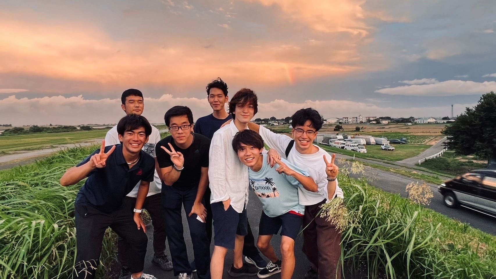

各校航空部
東京大学運動会航空部
早稲田大学航空部


1930年誕生、約90年の歴史を持つ。現在部員数は37名。東京六大学対抗グライダー競技会で3度優勝、早慶戦12勝、全国大会で8度の団体優勝をしている。出場選手は4年主将エース、伊藤大貴、3年大森悠矢、3年稲葉宏人、3年藤芳一大。
早稲田大学航空部公式HP慶應義塾體育會航空部

1930年誕生、90年以上の歴史を持つ。現在部員数は56名。東京六大学対抗グライダー競技会では15度団体優勝、早慶戦で30勝している。出場選手は4年松本、緑川の両エースを筆頭に4年芝尾、麻谷、加藤、ローゼンタール、桐山、3年嶋村、松下、多田と厚い選手陣で臨む。
慶應義塾體育會航空部公式HP明治大学体育会航空部
1930年に航空研究会として創設され、今年で92周年を迎えた。現在は埼玉県春日部市の河川敷に宝珠花滑空場を擁し、4機のグライダーを用いて活動している。 今年は4年の小林、茂手木の2名が出場する。
明治大学体育会航空部公式HP法政大学体育会航空部
1929年に創部した、日本で1番歴史のある航空部。1931年には、小型複葉プロペラ機「青年日本号」で東京飛行場(現・羽田空港)からイタリア・ローマのリットリオ飛行場(現・ウルベ空港)までの飛行を行った。現部員数は34名。選手は主将原田、佐藤、田中、長谷川が出場する。XTとHTの2機のDISCUSを有しており、今大会はHTを競技機として使用する。
法政大学体育会航空部公式HP立教大学体育会航空部

1961年創部、約60年の歴史を持つ。現在部員数は17名。東京六大学対抗グライダー競技会で1度準優勝、三校戦で1度優勝、関東交流戦で去年優勝している。
立教大学体育会航空部公式HP